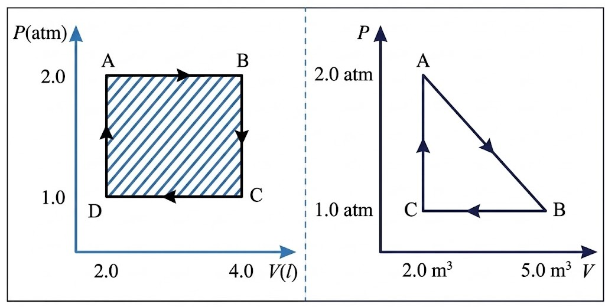
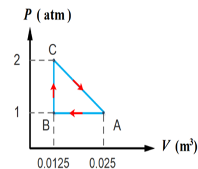
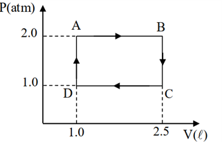
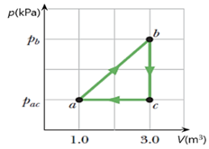
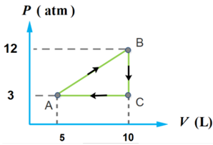
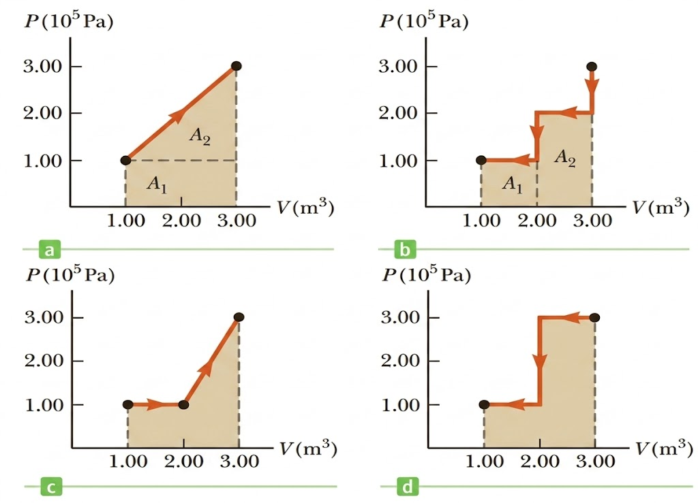
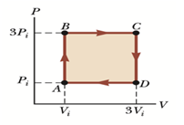
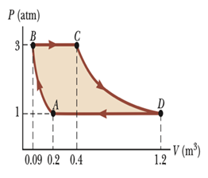
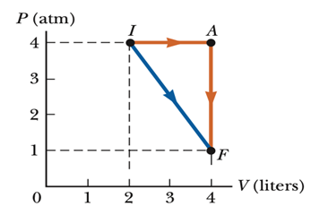

លំហាត់ជ្រើសរើសសំខាន់ៗ ត្រៀមប្រឡងសញ្ញាបត្រមធ្យមសិក្សាទុតិយភូមិ
ឧស្ម័នអេល្យូមមួយ (ចាត់ទុកអេល្យូមជាឧស្ម័នបរិសុទ្ធ) មានសីតុណ្ហភាពដើម \(0^\circ\text{C}\) ធ្វើបម្លែងទែម៉ូឌីណាមិចតាមលំនាំអ៊ីសូបារដែលមានសម្ពាធថេរ \(25 \text{ kPa}\) ។ បើមាឌរបស់វាកើនឡើងពី \(10 \text{ mL}\) ទៅ \(20 \text{ mL}\) និងបំភាយថាមពលកម្ដៅ \(30 \text{ cal}\) ។
យក \(1 \text{ cal} = 4.2 \text{ J}\) ។
គណនាកម្មន្តសរុបក្នុងបម្លែងបិទ (ដូចរូបខាងក្រោម) ។

ដ្យាក្រាម (P-V) តាងស៊ិចមួយនៃម៉ូលេគុលឧស្ម័នមួយដូចបានបង្ហាញនៅក្នុងរូប ។
- ក្នុងបម្លែងពី A ទៅ B សម្ពាធថេរ ។
- ក្នុងបម្លែងពី B ទៅ C មាឌថេរ ។
- ក្នុងបម្លែងពី C ទៅ A សម្ពាធប្រែប្រួល ។

ឧស្ម័នបរិសុទ្ធមួយធ្វើបម្លែងជាបម្លែងបិទ ABCD វិញ ដូចបានបង្ហាញក្នុងរូប ។

ឧស្ម័នបរិសុទ្ធមួយបានរងការផ្លាស់ប្ដូរភាពតាមលំនាំបម្លែងបិទដូចរូបខាងក្រោម ។ អ័ក្សឈរត្រូវបានតាងឱ្យតម្លៃសម្ពាធ ដែល \(P_b = 7.5 \text{ kPa}\) និង \(P_a = P_c = 2.5 \text{ kPa}\) ។ នៅចំណុច a មានសីតុណ្ហភាព \(T_a = 200 \text{ K}\) ។

ដ្យាក្រាម (P-V) តាងស៊ិចមួយនៃម៉ូលេគុលឧស្ម័នបរិសុទ្ធមួយម៉ូល ដូចនៅក្នុងរូប ។
- ក្នុងបម្លែងពី A ទៅ B សម្ពាធប្រែប្រួល ។
- ក្នុងបម្លែងពី B ទៅ C មាឌថេរ ។
- ក្នុងបម្លែងពី C ទៅ A សម្ពាធថេរ ។

ចូរគណនាកម្មន្តសរុបដូចបង្ហាញក្នុងរូបខាងក្រោម៖

ឧស្ម័នបរិសុទ្ធមួយនៅខណៈដំបូងនៅ \(P_i, V_i\) និង \(T_i\) ត្រូវបានដំណើរការ ១ ស៊ិច (ដូចរូប)។

គំរូនៃឧស្ម័នបរិសុទ្ធមួយបានដំណើរការបង្ហាញក្នុងរូបភាព ។
- ពី A ដល់ B គឺដំណើរការដោយលំនាំអាដ្យាបាទិច ។
- ពី B ទៅ C គឺជាលំនាំអ៊ីសូបាជាមួយនឹងការស្រូបកម្ដៅ 345 \text{ kJ}\) ។
- ពី C ទៅ D គឺជាលំនាំអ៊ីសូទែម ។
- ពី D ដល់ A វាជាអ៊ីសូបារជាមួយនឹងការបញ្ចេញថាមពលកម្ដៅ 371 \text{ kJ}\) ចាកចេញពីប្រព័ន្ធ ។

ម៉ូលេគុលឧស្ម័នមួយត្រូវបានស្ថិតនៅក្នុងប្រព័ន្ធទែម៉ូឌីណាមិច ហើយត្រូវរងនូវបំលែងភាពពី I ទៅ F (ដូចបានបង្ហាញនៅក្នុងរូបខាងក្រោម)។ ថាមពលកម្ដៅ \(418 \text{ J}\) ត្រូវបានស្រូបដោយប្រព័ន្ធនៅពេលដែលផ្លាស់ប្តូរពីចំណុច I ទៅ F (តាមគន្លងត្រង់) ។
